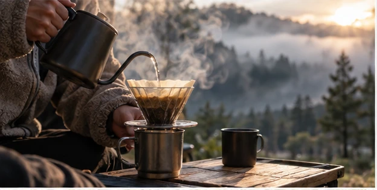

SOTOJITAKU CAMP / BEGINNER GUIDE
朝ごはんは、
撤収まで考えて選ぶ。
おいしさだけでなく、準備時間・洗い物・火器を片付ける時間まで含めて考えます。
キャンプの朝は気持ちのいい時間ですが、チェックアウトがある日は朝食のあとに寝具、テント、テーブルなどを片付けます。朝ごはんを凝りすぎると撤収が慌ただしくなるため、初回は短時間でつくれるものか、調理しない選択を用意しておくと余裕が残ります。
01 片付ける順番から逆算する
朝食で最後まで使うバーナー、テーブル、クーラーなどは、食事後まで片付けられません。チェックアウト時刻から逆算し、食べ終わる時間を決めます。
雨天では乾燥や撤収に時間がかかるため、さらに余裕を持たせます。
02 道具が少ないメニューを選ぶ
ホットサンド、パンとスープ、コーヒーなど、使う器具が少ないメニューは初心者向きです。ただしホットサンドメーカーは直火対応か、使う熱源に適合するかを確認します。
前夜の食材を安全に再利用できるかは保存状態によります。要冷蔵品は適切に保冷し、不安な食材は使わない判断をしてください。
03 料理しない朝も立派なキャンプ
パン、果物、飲み物など調理なしで済ませると、景色を眺めたり散歩したりする時間をつくれます。キャンプだから毎食アウトドア料理をする必要はありません。
SOTOJITAKUでは「料理をがんばらない」選択もプランに入れています。
出発前のチェック
- チェックアウト時刻
- 朝食に使う器具
- 燃料の残量
- 水・飲み物
- 保冷が必要な食材
- 洗い物を減らせる工夫
- 撤収開始時刻
- 調理しない予備案
朝の一杯を主役にしてもいい料理を簡単にして、コーヒーや景色を楽しむ時間を残すのもキャンプの過ごし方です。何を作るかより、どう過ごしたいかから決めます。
次に読む
MAKE YOUR CAMP
条件を選ぶと、必要なものが変わります。
7つの質問から、持ち物・買う/借りる・ごはん・予算・1日の流れまで、あなたのキャンプとして組み立てます。
SOTOJITAKU CAMPでつくる →